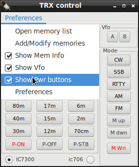
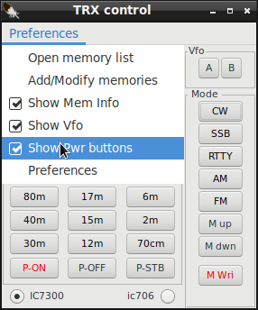
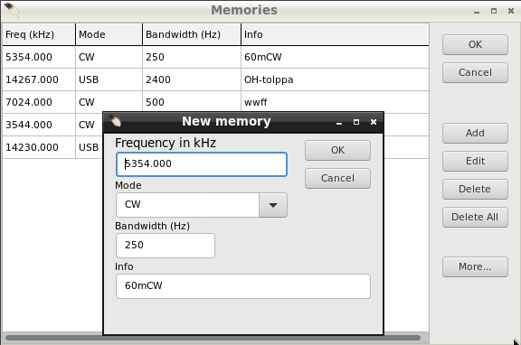

|
WARNING! Backup your data often! BACKUP your log directory at the end of EVERY session! All that you need to backup and store in a safe place is the log database directory located in the ~/.config/cqrlog/database folder, or you can enable the autobackup function in Preferences. This autobackup function creates an ADIF file with a backup of your log. /td> |
| < Prev | [Menu] | Next > |

 

TRX Control window Shows current frequency and buttons allow change of Band, mode, memory and rig.
With P-on/off/stb buttons current rig can be set ON, OFF or STANDBY (if it supports rigctld power commands).
Default setting for power buttons is hidden. You can change it via dropdown menu "Preferences".
M_up and M_dwn buttons select next/previous entry from memory list. M_Wri adds entry to memory list from current rig frequency and mode.
A field under "M Wri" indicates last pressed (M_up and M_dwn) memory. M x where x refers to line number in Add/Modify memory list.
M 0 (in red) indicates that there are no memory lines, M x (in blue) indicates the last line in Add/Modify memory list.
Memories can now have info text (max 25chr) and if it is set the first 5 chr will appear to this field. Otherwise just M # memory line number.
NOTE!!! Cqrlog TRXcontrol memories are categorized by mode (groups). CW, SSB(=AM+USB+LSB+FM), RTTY, DATA(=PKTLSB+PKTUSB)[no mode selector for this but you may "M wri" it anyway].
So do not wonder if you get "M 0" when pressing M_up and M_dwn and you think you should have entries in memory list.

You can set rig by double click of an memory row in Open memory list. Similar action happen also in Add/Modify memories. The differense is that you can keep
Open memory list open while loggeing qsos etc. Where as Add/Modify memories, when open, blocks other functionality.
Closing Add/Modify memories is done with buttons OK or Cancel.Closing Open memory list window must be done using x of top right corner of window.
Open memory list closes also if Add/Modify memories is opened. They can not be open at same time.
See also setting up TRXControl
| < Prev | [Menu] | Next > |